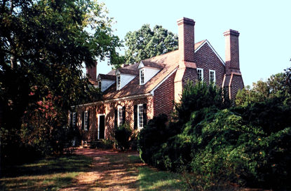
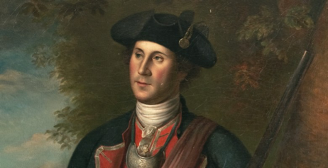
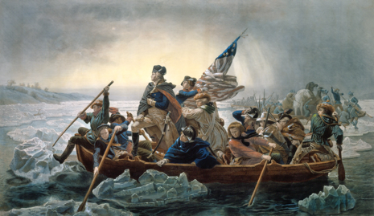
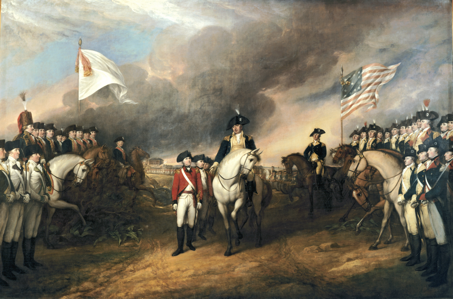
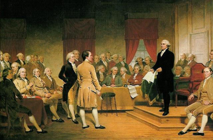
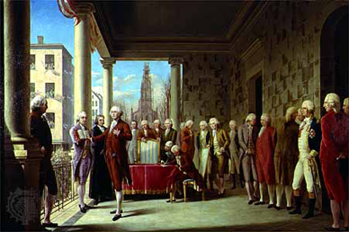
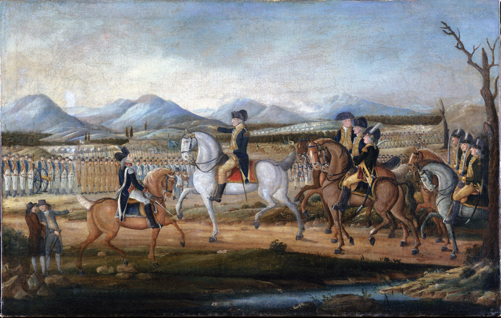
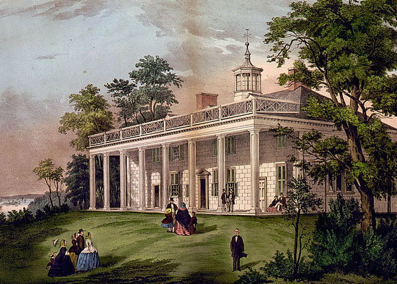
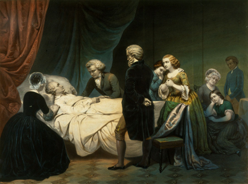

1732
George Washington was born to Augustine and Mary Washington in Westmoreland County, VA. His grandfather, John Washington, had emigrated to Virginia in 1656 to farm. George's father, Augustine, farmed tobacco and Justice of the Westmoreland County Court. Augustine's death would prevent George from going to school in England and his mother refused to grant him permission to join the Royal Navy.

1754
The colonies of Virginia and Pennsylvania grew suspicious when the French began expanding into the Ohio Country in 1753. This expansion eventually led to the conflict known as the French and Indian War and to the start of the Seven Years' War. Washington delivered a letter to the French asking them to vacate the Ohio Valley but the French refused to comply. Washington now officially began his military career by getting a commission to raise a company of 100 men. In May 1754, Washington and his small militia ambushed the French and won a small battle. The French responded by attacking and capturing Washington at Fort Necessity but released him and his troops to return to Virginia.
1775
Washington leads the continental army into the American Revolution
1781
Great Britain Surrenders
1785
Washington heads the Constitutional Convention.
1782
Washington becomes the first United States President
1793
Washington issues the Proclamation of Neutrality

1794
Federal troops suppress the Whiskey Rebellion
1797
Washington retires to Mount Vernon
1799
Washington dies at Mount Vernon
